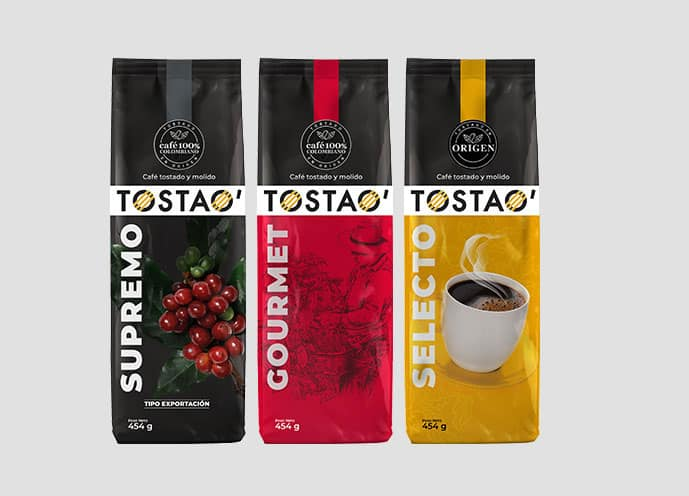
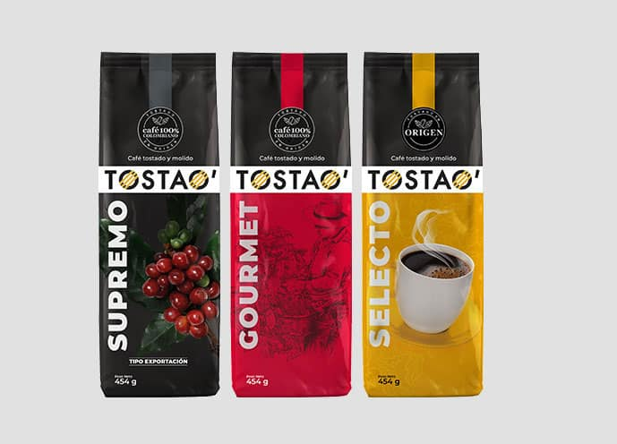

Colombia alberga una fauna excepcionalmente rica y diversa, considerada una de las más variadas del mundo.
Su posición geográfica privilegiada, con ecosistemas que van desde selvas tropicales hasta altas montañas,
contribuye a esta riqueza.
Entre las especies más emblemáticas se encuentran el cóndor andino, el oso de anteojos, diferentes tipos de
monos, y una gran variedad de aves, reptiles y anfibios
Colombia cuenta con un número significativo de especies endémicas, es decir, especies que solo se
encuentran en este país. Algunos ejemplos son el olinguito, el mono araña colombiano, la tortuga morrocoy,
el lagarto azul de Gorgona, el tití ornamentado y el cóndor de los Andes
Desafortunadamente, varias especies de la fauna colombiana están amenazadas debido a la pérdida de hábitat,
la caza ilegal y otras actividades humanas. Entre las especies amenazadas se encuentran el tití
cabeciblanco, el pez sierra, la tortuga del río, el manatí amazónico y del caribe, entre otros


 
